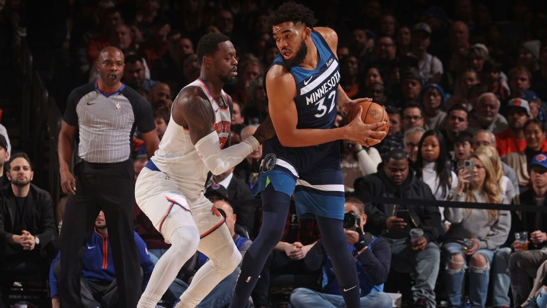
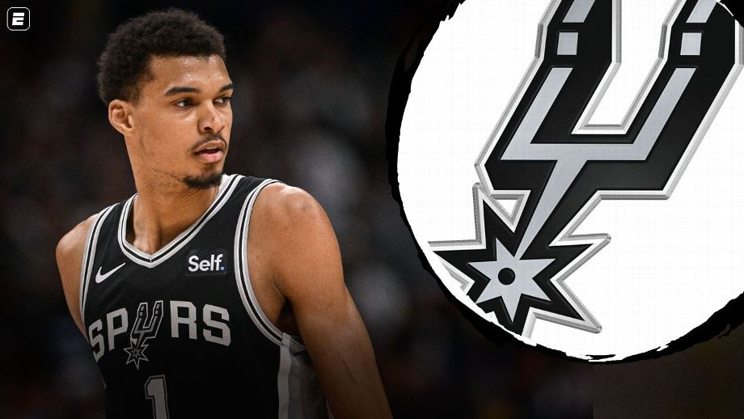
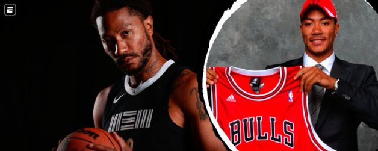
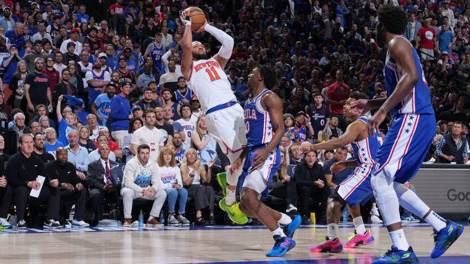

Noticia de destaque:
Knicks e Timberwolves fecham 'megatroca' com Julius Randle e Karl-Anthony Towns
O New York Knicks e o Minnesota Timberwolves estão finalizando uma troca envolvendo Julius Randle e Karl-Anthony Towns. A notícia foi trazida pelo “The Athletic” e apurada pela ESPN na última sexta-feira (27).
O acordo faria com que Randle e Donte DiVincenzo terminassem em Minnesota e Towns em Nova York. Os Knicks querem um pivô para reforçar sua maior fraqueza, enquanto os Timberwolves estão de olho em arremessos melhores e mais versatilidade em sua busca rumo às finais da Conferência Oeste.
Clique aqui para saber mais detalhes sobre a trocaNoticias Gerais
San Antonio Spurs aposta em Chris Paul para facilitar a vida de Wembanyama
Victor Wembanyama tem agora a companhia de Chris Paul no San Antonio Spurs. Quanto será que essa mescla de juventude e experiência pode alavancar o desempenho do time, que foi o penúltimo colocado da Conferência Oeste na última temporada da NBA?
Ainda não dá para dizer que existe uma pressão nos Spurs por muito mais vitórias e por briga por vaga nos playoffs, mas as movimentações que foram feitas para a temporada 2024/25 sugerem que uma boa evolução é esperada. As chegadas de Chris Paul e Harrison Barnes sugerem uma certa pressa em colocar mais talento e gente provada ao redor de Victor Wembanyama para ver o comportamento dele nessas situações. Se em meio a uma equipe crua ele já brilhou como novato, a expectativa é que agora ele seja capaz de voar mais alto.
Clique aqui para saber mais detalhesMVP mais jovem da história na NBA, Derrick Rose anuncia aposentadoria: 'Dei tudo de mim'
MVP da temporada 2010/11 da NBA pelo Chicago Bulls, Derrick Rose anunciou nesta quinta-feira (26) a aposentadoria do basquete após uma carreira de 16 anos na liga.
“Sabendo que dei tudo de mim ao jogo, me sinto confiante nessa decisão”, disse Rose à ESPN.
“O basquete foi apenas o começo para mim. Agora, é importante que eu dê tudo de mim à minha família. Eles merecem isso”.
Clique aqui para saber mais detalhesO Washington Wizards e a busca por uma direção

Chegou a vez de apresentar ao fã de esportes mais um time que vem de uma campanha decepcionante e busca se reerguer: o Washington Wizards, que tem como principal novidade no elenco um francês de 19 anos escolhido na segunda posição do Draft.
O que aconteceu: começar uma temporada depois de negociar Bradley Beal e Kristaps Porzingis já indicava o início de um processo de reconstrução. Mesmo sem tanta ambição, o desempenho em quadra decepcionou. Os Wizards tiveram a pior campanha da sua história. Mais preocupante do que o número de derrotas em si foi a constatação de que o desenvolvimento dos jovens e o nível de competitividade do time estavam deixando a desejar. O que culminou na demissão do treinador Wes Unseld Jr ainda na metade do campeonato.
Clique aqui para saber mais detalhesEstrela dos Knicks abre mão de R$ 613 milhões para time conseguir contratar reforços
Em um movimento sem precedentes, Jalen Brunson abrirá mão de U$ 113 milhões (R$ 613 milhões) para que o New York Knicks tenha espaço de salário o suficiente para melhorar a equipe.
Segundo fontes disseram à ESPN, o armador assinou uma renovação de U$ 156,5 milhões (R$ 850 milhões) em quatro anos nesta sexta-feira (12). Caso esperasse até a temporada que vem, Brunson poderia assinar um contrato de U$ 269 milhões (R$ 1,4 bilhão) em cinco anos.
Clique aqui para saber mais detalhes